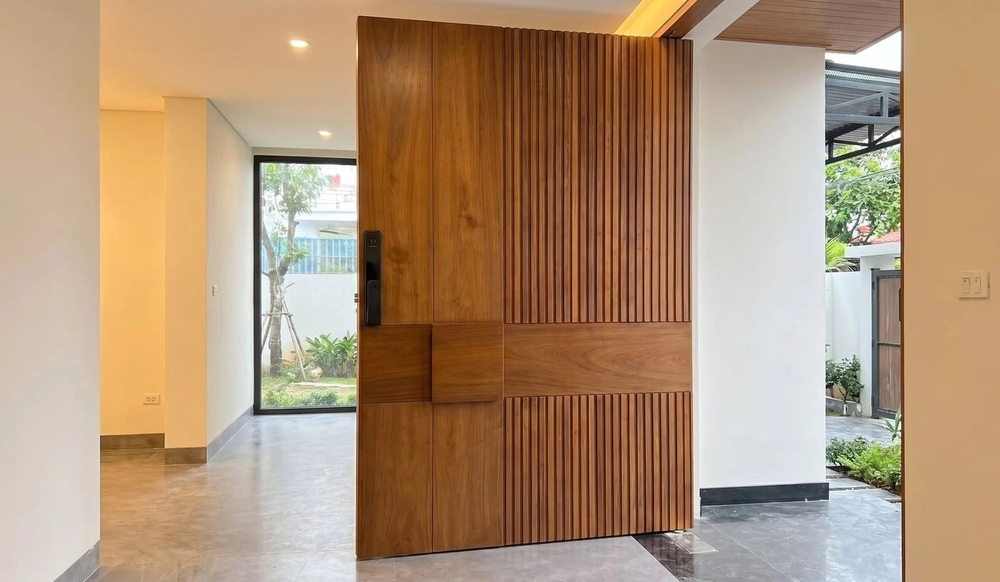

Nói ngắn: nếu cửa chính đứng ngoài nắng mưa và bạn muốn cánh lớn, ít cong vênh, hãy chọn gỗ Teak. Nếu thích cửa nặng, chắc, màu sẫm kiểu truyền thống, gỗ Lim là lựa chọn bền. Nếu cần chi phí hợp lý mà vẫn là gỗ tự nhiên chắc chắn, gỗ Kiền Kiền đáng cân nhắc. Dưới đây là cách chúng tôi tư vấn cho từng trường hợp.
Cửa chính khác cửa phòng ở điểm nào?
Cửa chính phải chịu nắng, mưa hắt, độ ẩm thay đổi theo mùa và được đóng mở hàng nghìn lần mỗi năm. Nhiều nhà ở Đà Nẵng còn chọn cửa xoay trục khổ lớn, cánh dày 50–55mm, nên loại gỗ cần ít co ngót để cánh không xệ hay hở mép sau vài năm. Vì vậy câu hỏi không chỉ là "gỗ nào đẹp", mà là "gỗ nào đứng được ở vị trí đó".
Gỗ Teak: ưu tiên của chúng tôi cho cửa chính
Teak có hàm lượng dầu tự nhiên cao, nên chống ẩm, chống mối mọt và ít nứt khi trời nắng nóng. Gỗ co ngót thấp, phù hợp cánh lớn và cửa xoay trục. Vân thẳng, màu nâu vàng ấm, càng dùng càng lên màu. Teak cũng dễ soi rãnh, phay hoa văn, ghép lam và bám sơn PU tốt.
- Hợp với: cửa chính hướng nắng, cửa xoay trục khổ lớn, mặt tiền hiện đại.
- Lưu ý: giá cao hơn gỗ thông dụng; phôi dài trên 2,7m có hạn, nên cửa rất cao cần tính phương án chia ô hoặc ghép.
Xem thêm công trình: cửa và cầu thang gỗ Teak nhà anh Hưng, cửa gỗ Teak ô kính hai bên ở Hội An.
Gỗ Lim: chắc, nặng, đậm chất truyền thống

Lim rất cứng và bền, chống mối mọt tốt, nên được nhiều gia đình chọn cho cửa chính từ lâu. Đổi lại, gỗ Lim rất nặng: cánh lớn cần bản lề sàn tải cao (chúng tôi dùng Imundex tải 120kg cho cửa xoay trục). Màu gỗ sẫm dần theo thời gian, và nguồn gỗ ngày càng hạn chế.
- Hợp với: nhà thích màu gỗ đậm, cửa phong cách truyền thống hoặc tân cổ điển, cửa phay CNC hoa văn.
- Lưu ý: tính kỹ phụ kiện chịu lực; màu sẽ tối hơn so với lúc mới lắp.
Xem thêm: cửa gỗ Lim lam gỗ 1m6, cửa gỗ Lim CNC hoa.
Gỗ Kiền Kiền: chắc chắn, chi phí hợp lý

Kiền Kiền là gỗ chắc, chịu lực và chịu ẩm khá, giá hợp lý hơn Teak và Lim. Vân gỗ không nổi bằng và màu không thật đều, nên Kiền Kiền đẹp nhất khi thiết kế có nhịp điệu riêng: phối lam đứng, ghép vân ngang, hoặc kết hợp khung bao sơn màu. Gỗ cũng khá nặng, cần chọn bản lề phù hợp.
- Hợp với: nhà phố hiện đại muốn gỗ tự nhiên với ngân sách vừa phải, khung bao, cửa phụ.
- Lưu ý: nên chọn kiểu mặt cánh có lam hoặc rãnh để vân gỗ không đều trông chủ ý hơn.
Xem thêm: cửa gỗ Kiền Kiền nhà anh Phan Anh, cửa và cầu thang gỗ Kiền Kiền.
So sánh nhanh
| Tiêu chí | Teak | Lim | Kiền Kiền |
|---|---|---|---|
| Chịu nắng mưa | Rất tốt | Tốt | Khá |
| Ít cong vênh | Rất tốt | Tốt | Khá |
| Trọng lượng | Vừa | Rất nặng | Khá nặng |
| Màu, vân | Nâu vàng, vân thẳng | Sẫm, đậm dần | Nâu, vân kém nổi |
| Chi phí | Cao | Cao | Hợp lý |
Ba điều quan trọng không kém loại gỗ
- Gỗ được sấy đúng độ ẩm. Gỗ tốt mà sấy chưa kỹ vẫn cong vênh. Chúng tôi tự chọn, xẻ và sấy gỗ tại xưởng Điện Bàn.
- Lớp sơn hoàn thiện. Sơn PU nhiều lớp trong phòng sơn kín giúp giữ vân gỗ, chống ẩm và tia UV.
- Phụ kiện đúng tải. Bản lề sàn, bản lề âm, chốt âm phải tính theo trọng lượng cánh. Xem các hãng chúng tôi dùng ở trang Phụ kiện cửa.
Chưa chắc nên chọn gỗ nào? Gửi kích thước ô cửa, chúng tôi tư vấn và báo giá theo từng loại.
Nhận báo giá